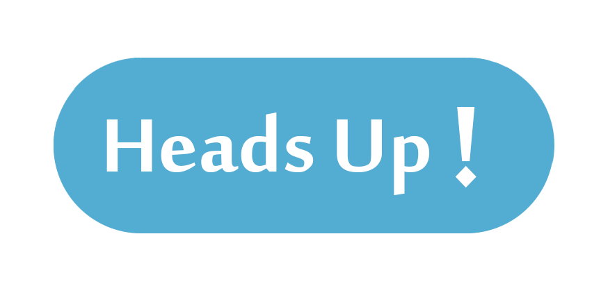

<!-- <style>
.background-sidemenu
{
	background-color:#53acd2;
}
</style> -->

<ion-side-menus enable-menu-with-back-views="false">
  <ion-side-menu-content>
    <ion-nav-bar class="bar-positive">
      <ion-nav-back-button>
      </ion-nav-back-button>

      <ion-nav-buttons side="left">
        <button class="button button-icon button-clear ion-navicon" menu-toggle="left">
        </button>
      </ion-nav-buttons>
    </ion-nav-bar>
    <ion-nav-view name="menuContent"></ion-nav-view>
  </ion-side-menu-content>

  <!-- <div class="loader"></div> -->
  
  <ion-side-menu side="left">
    <ion-header-bar class="bar bar-header bar-positive">
      <h1 class="title">Heads Up</h1>
    </ion-header-bar>
    <ion-content class="background-sidemenu">
      <ion-list>
        <ion-item menu-close href="#/app/categories">
          <i class="icon ion-android-list"></i>
          Categories
        </ion-item>
        <ion-item menu-close href="#/app/alerts">
          <i class="icon ion-android-alarm-clock"></i>
          My Alerts
        </ion-item>
      </ion-list>
    </ion-content>
  </ion-side-menu>
</ion-side-menus>
